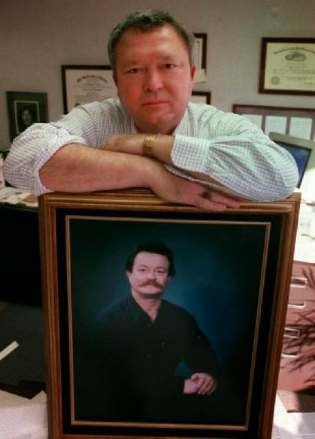
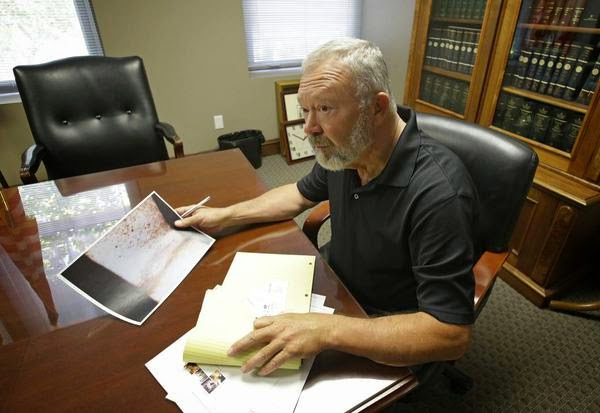

| They collected them -- and probably sold them, too: Feds pose with firearms confiscated at the border. |

“The Investigations Division of the Office of the Inspector
General has thoroughly reviewed your allegations and concluded that the issues
raised do not warrant an investigation by this office,” insisted
the unsigned March 10 letter from the Justice Department.
The “allegations” and “issues” I had raised in my March 2
letter to Associate Deputy Attorney General David Margolis dealt with disclosures
by former FBI undercover operative John Matthews about a federal “sting” operation
in which AR-15 rifles – which had been converted to full-auto machine guns -- were
illegally sold to narcotics-peddling motorcycle gangs through the Lone Wolf gun
shop in Tucson, Arizona. The key
elements of Matthews’ account were
confirmed by his former FBI handler, Donald Jarrett. The Justice Department’s
exhaustive and definitive “review” of this matter took less than a week.

Lone Wolf was the
same gun shop was bullied by the ATF into participating in the
notorious “Fast and Furious” operation, through which firearms were illegally
provided to agents of Mexican drug cartels. That initiative was
inspired by the cynical
calculation that an engineered increase in “gun-related violence” would
create political pressure to impose new restrictions on firearms ownership.
“With the number of guns we let walk, we’ll never know how
many people were killed, raped, robbed,” lamented
ATF agent John Dodson, who was involved in the operation.
“Fast and Furious” was an exercise in abetting criminal
violence for the purpose of political theater, and it was neither the first nor
the last federal venture of that kind. During the 1990s, Matthews – a Vietnam
veteran who is dying from exposure to Agent Orange -- was an infiltrator and
informant in the FBI’s
PATCON (Patriot Conspiracy) operation, which he suggests was a progenitor
of “Fast and Furious.”
Rather than discrediting Matthews’ allegations, the Justice
Department’s careful and fastidious “review” has tacitly validated them: The
letter I was sent didn’t dismiss those claims as false or exaggerated, it
simply said they did “not warrant an investigation.” This is because the
actions Matthews described are entirely unexceptional – they are standard
operating procedure for the FBI.
| Disillusioned snitch: John Matthews. |

“As we talk of gun control … over the years [of] how many
cases of sporterized SKS, AK47s, and SKSs were sold to groups and case after
case of ammo for them all with the blessings of the FBI & ATF with no paper
work,” Matthews
wrote in a November 8, 2014 email (which I have lightly edited for spelling
and grammar). “Also let’s not forget the AR15s, they were made full auto from
the Lone Wolf gun store back in the 90s by a guy brought in by the FBI for me
to put in place. Those guns went to bikers who were sell[ing] drugs on the
border. Those drugs were [believed] to be coming in from China.”
In March 2013, Matthews corresponded with Jarrett,
his former FBI handler, about this element of the PATCON operation. The
name of the “guy” brought in by the FBI to broker the firearms deal was David
Mann, who had a PO Box in St. Johns, Arizona.
“I [would] pick him up in Payson, AZ on our way up to Surplus
& Stuff in Snowflake … and met with a guy name[d] Tim,” Matthews
recalled in a March 28, 2013 email to Jarrett. “He [would] show him his weapons
that he was making and how he could make them anything they wanted. Then from
there we took a trip up to where the guy [kept] the tractors that we were thinking
the dope was coming in from.”
The tractors were apparently being used as part of an
international narcotics smuggling operation.
During the trip described by Matthews, he and David Mann -- and
perhaps the mysterious “Tim” -- met with another individual who “ran the church
and we [thought was] selling the drugs to the bikers. We were going to get
David to sell weapons too [sic] them. This trip was where [I] got David in with
this [sic] guys so I could move on. Does this sound right to you[?] Also have
more info on him and [meetings] at gun store (Lone Wolf) and other places like
Scottsdale, before we turn[ed] him loose.”
“Yes, that sounds absolutely correct about David,” Jarrett
replied the following day. “I only introduced you to one guy that work[ed]
with guns, and that was David.”
All of this is quite similar to the “Fast and Furious”
operation, despite taking place decades earlier.
At the time, as summarized in recent federal court filings,
Matthews was employed by the FBI “to infiltrate and monitor the activities of
the extreme political right.” As a Marine veteran of the Vietnam War, Matthews
was eager to participate in what he was told was a mission vital to national
security. He applied himself with earnestness, and was given a commendation by
the Bureau for his efforts.
However, he eventually became disenchanted with PATCON,
concluding that the FBI’s design “had been to infiltrate and to incite these
fringe groups to violence,” rather than protecting the public.
The proto-“Fast and Furious” operation to arm drug-dealing
criminal gangs – an entirely typical specimen of prohibition-enabled official
corruption – was one of several schemes that disabused Matthews of the idea
that PATCON was a noble undertaking. In a meeting with Salt Lake City attorney
Jesse Trentadue in July 2011 Matthews described “a PATCON operation designed to
promote an extremist group to carry out a plan to damage the cooling system of
the Brown’s Ferry Nuclear Power Plant in Alabama….”
More importantly, from Trentadue’s perspective, was Matthews’
account of seeing “Timothy McVeigh and a German National by the name of Andreas
Strassmeir at a militia training facility near San Saba, Texas” shortly before
the April 1995 Oklahoma City Bombing.
“According to Matthews, he had reported the
McVeigh-Strassmeir siting to the FBI, and was told by the FBI that the Bureau
was already aware of that fact, which indicated to Mr. Matthews that others
within the FBI were monitoring McVeigh on the run-up to the attack on the
Murrah Building,” Trentandue pointed out in a motion filed before federal Judge
Clark Waddoups last August.
 |
| Seeking justice: Jesse in the 1990s... |

For nearly twenty years, Trentadue has been trying to learn
the full truth about the torture-murder of his younger brother Kenneth at the
hands of the FBI. Shortly after the April 19, 1995 OKC bombing, Kenneth
Trentadue – on parole following a prison term for bank robbery – was detained
in San Diego and taken to the Federal Transfer Facility in Oklahoma City.
It was Kenneth’s singular misfortune to be a near-twin of
another bank robber named Richard Lee Guthrie, who was already immured
elsewhere in the imponderable depths of the federal prison system. Guthrie had
been a member of a white supremacist gang called the Aryan Republican Army,
which robbed banks in order to fund domestic terrorism – including the OKC
bombing. The ARA frequented a white supremacist redoubt in Oklahoma called
Elohim City, in the company of several federal undercover assets – among them the
same Andres Strassmeir whom Matthews had seen in the company of Timothy
McVeigh.
The federal operatives who beat and garroted Kenneth
Trentadue thought they were eliminating Guthrie, whose
knowledge about the federal government’s role in OKC was potentially
troublesome. The murderers arranged for Kenneth’s cell to be cleaned up and
attempted to have his body cremated. Jesse and his mother Wilma intervened to
preserve Kenneth’s remains, which displayed undeniable evidence that he had
been beaten to death – and had put up a doomed fight against his murderers.
Shortly thereafter, Guthrie
likewise died in a staged “suicide.”
In 2001, a federal judge ruled that the FBI had lied about
the circumstances of Kenneth Trentadue’s death and was guilty of destroying
evidence in the case. Jesse set aside $250,000 of the $1.1 million civil
judgment against the FBI as a reward for information leading to the prosecution
of the murderers. That reward remains unclaimed.
 |
| ... Jesse preparing for trial last summer. |

At this own expense, Jesse has continued his efforts to
unearth suppressed video footage of the OKC bombing, which he believes will
reveal the identity of one or more federal operatives who took part in that
atrocity. Blessed with financial resources as inexhaustible as its
institutional corruption, the FBI has used every tactic at its disposal – both legal
and illegal – to prevent the disclosure of that video.
In the service of that
cover-up, the Bureau has repeatedly ignored and disobeyed orders from federal
judges and engaged
in blatant witness tampering.
Last July, Matthews was scheduled to testify – via teleconference
– in
a hearing before U.S. District Judge Clark Waddoups. Four days before his
scheduled appearance, Matthews had
a phone conversation with FBI Special Agent Adam Quirk in which the thoroughly
intimidated witness promised that “I ain’t goin’ and I ain’t saying nothing
unless somebody issues me a subpoena.” Even if the judge were to “haul my ass
to Salt Lake City, I’m gonna set there on the stand and say I don’t recall
anything.”
“That’s fine,” Quirk replied, approving of Matthews’ stated
intention to perjure himself. During a phone conversation on the following day,
Matthews repeated his assurance that he would try to avoid a subpoena.

“Well, yeah, and I mean – worst case scenario, even if you
testified you can just – you can say you have, you know – you have nothing to
say,” Quirk suggested.
Matthews floated the possibility that he might take a trip
in order to avoid a subpoena.
“That’s fine,” Quirk replied. “F*ck ‘em, right?”
Last November 13, Trentadue filed a petition with Waddoups
seeking to have the FBI held in contempt of court, and the appointment of a
special master to oversee the FBI’s “compliance with the court’s orders,
particularly relating to allegations of witness tampering, and with plaintiff’s
FOIA request” for the OKC bombing videos. Waddoups
acknowledged the validity of Trentadue’s claims – even as he declined to
impose sanctions on the Bureau.
Matthews is residing outside Utah, beyond the range of a
civil subpoena. Adam
Quirk, who crimes in this case are now a matter of public record, was a
potential source of trouble for the FBI – but that problem solved itself last
December, when Quirk
was arrested for aggravated assault after choking and beating his live-in
girlfriend.

Quirk’s defense attorney says
that Quirk has “made arrangements to move to Wisconsin,” which means that
he will also be inaccessible by way of a civil subpoena. In response to my
inquiry, FBI
spokesman Todd Palmer said that “Adam Quirk resigned from the FBI in December
2014.”
Neither Matthews nor his PATCON handler, Donald Jarrett, has
replied to repeated requests for comment. The March 2 inquiry regarding the
Lone Wolf disclosures was directed to Associate
Deputy Attorney General David Margolis, who for decades has acted
as a “fixer”-without-portfolio for the Justice Department, abetting
cover-ups, protecting
hundreds of corrupt federal prosecutors, and otherwise obstructing
accountability for official misconduct.
“I’m
the department’s `cleaner,’” Margolis explained to an incoming Attorney
General, according to a profile in the National Law Journal. “I clean up
messes.”
During a career spanning a half-century and nine presidents,
Margolis has tidied up the Regime’s bloody business from the
Pine Ridge Reservation to Gitmo.
He is precisely the kind of official who would see nothing unusual, let alone
reprehensible, about federal agents providing machine guns to criminal gangs,
or torturing a man to death in an Oklahoma prison cell in order to cover up federal complicity in domestic terrorism.
If you can, please donate to help keep Pro Libertate online. Thank you so much!
Dum spiro, pugno!
3 comments:
If all of this is true then taking Gary Webb's own reports into account, we can safely label the US Federal Government as a drug cartel.
It never ceases to amaze me how corrupt the system really is.
The FBI is clearly one of the most dangerous terrorist organizations in this country:
to be more precise the "FBI" should always be identified as the
ADL/FBI as the professional LIARS
tell the fumbling bunglers inc. just what to say and do...
you know to promote the "Agenda" which is BAD FAITH
excellent info
then there is the all time in your face MASS MURDER PATCON
preliminary "Fiasco" at Waco
https://buelahman.wordpress.com/2015/03/12/is-the-birch-society-a-zionist-front/
Truth needs no defense
sincerely
Davy
Post a Comment